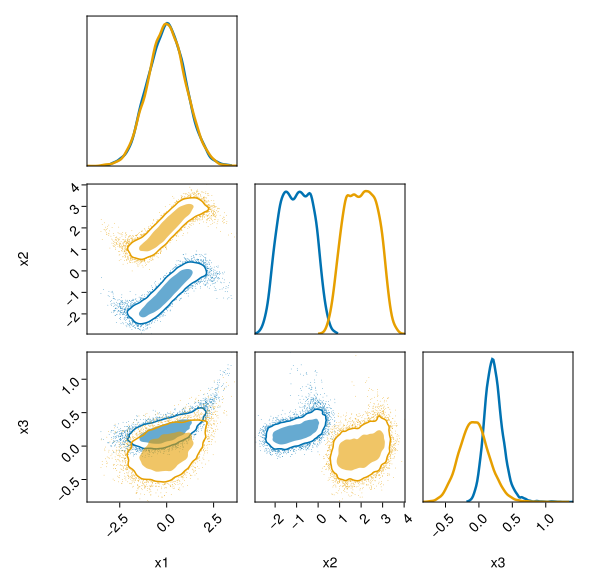
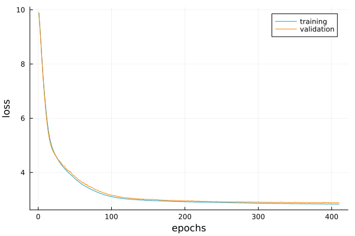
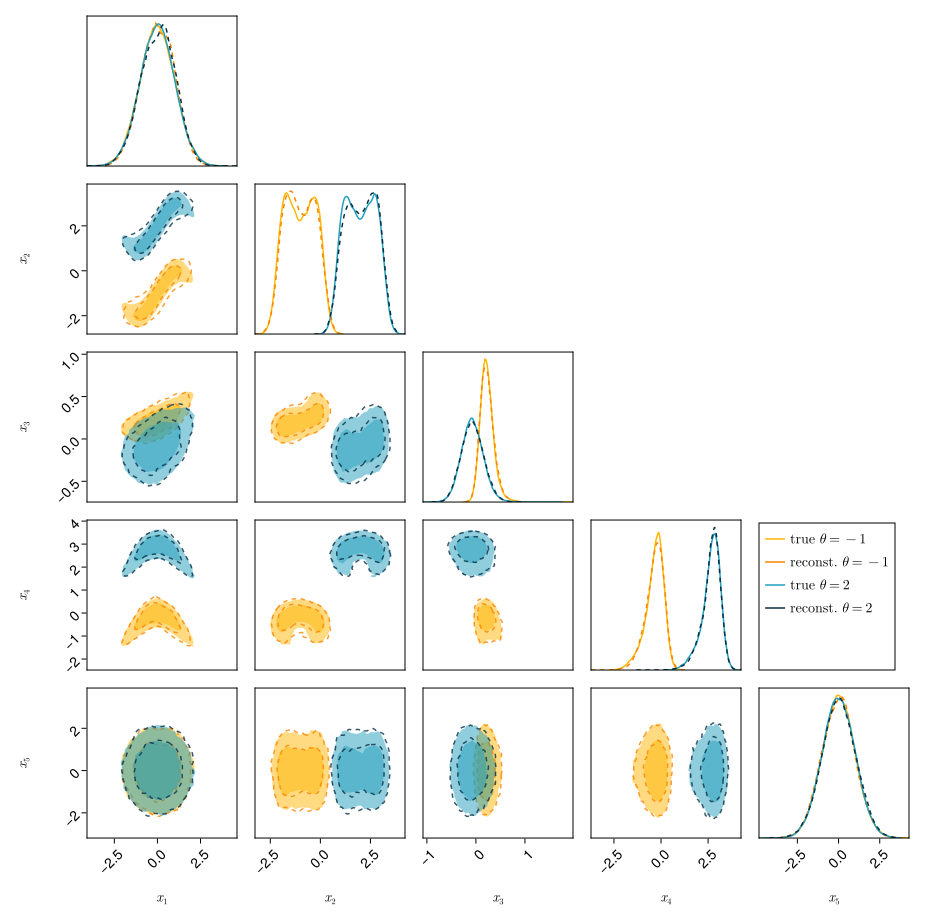

Example
Let us assume that we have the following data
n = 2000
# parameter that is fixed to -1 or 2
θ = Matrix{Float32}(undef, (1, 2*n))
@views θ[1, 1:n] .= -1f0
@views θ[1, (n+1):end] .= 2f0
x1 = randn(2*n)
x2 = sin.(x1/0.8) .+ 0.3*randn(2*n) .+ θ[1, :]
x3 = exp.(x1/1.4)/10 .+ 0.1*θ[1, :] .*randn(2*n) .- 0.1 * θ[1, :]
x4 = cos.(x1/1.1) .+ 0.3*randn(2*n) .+ θ[1, :]
x5 = randn(2*n)
x = Float32.(vcat(x1', x2', x3', x4', x5'))These data points are represented in the figure below as marks. The underlying true distribution is represented as shaded areas and the corresponding 1D marginalisation is shown on the diagonal.

Let us now use DensityFlows to emulate the probability distribution frunction from the sample. The first step is to define the DataArrays object from both $x$ and $\theta$ and the FlowChain. In the FlowChain one can either put CouplingBlocks or series of CouplingLayers making sure that we suffle the transformed dimensions as we do here.
using DensityFlows
data = DataArrays(x, θ)
chain = FlowChain(
CouplingLayer(data, [1, 2, 3], hidden_dim_s=16, hidden_dim_t=16),
CouplingLayer(data, [3, 4, 5], hidden_dim_s=16, hidden_dim_t=16),
CouplingLayer(data, [5, 1, 2], hidden_dim_s=16, hidden_dim_t=16),
NormalizationLayer(x, -1f0, 1f0)
)
@summary flow = Flow(chain, data)- model --------------------
RNVPCouplingLayer | s_net > [3, 16, 16, 3] (387 parameters)
| t_net > [3, 16, 16, 3] (387 parameters)
| axes > (d,n)=(5,1); identity=(4,5), transformed=(1,2,3)
RNVPCouplingLayer | s_net > [3, 16, 16, 3] (387 parameters)
| t_net > [3, 16, 16, 3] (387 parameters)
| axes > (d,n)=(5,1); identity=(1,2), transformed=(3,4,5)
RNVPCouplingLayer | s_net > [3, 16, 16, 3] (387 parameters)
| t_net > [3, 16, 16, 3] (387 parameters)
| axes > (d,n)=(5,1); identity=(3,4), transformed=(5,1,2)
Normalization Layer
- base distribution --------
Distributions.MvNormalTraining is performed with the train! function, after setting the optimizer.
state = Optimisers.setup(Optimisers.Adam(1f-4), flow.model)
train!(flow, data, state, epochs=50)The train and validation loss can be obtained as shown below.
p = plot()
plot!(p, training_loss(flow))
plot!(p, validation_loss(flow))
Finally, we can compare the reconstructed distribution (dark contours) to the true distribution (light contours). We can see that in that case a sample of 2000 points is enough to have a good emulator of the true distribution.

New points can be sampled using
x_new_1 = sample(flow, 1000, (-1f0,))
x_new_2 = sample(flow, 1000, (2f0,))